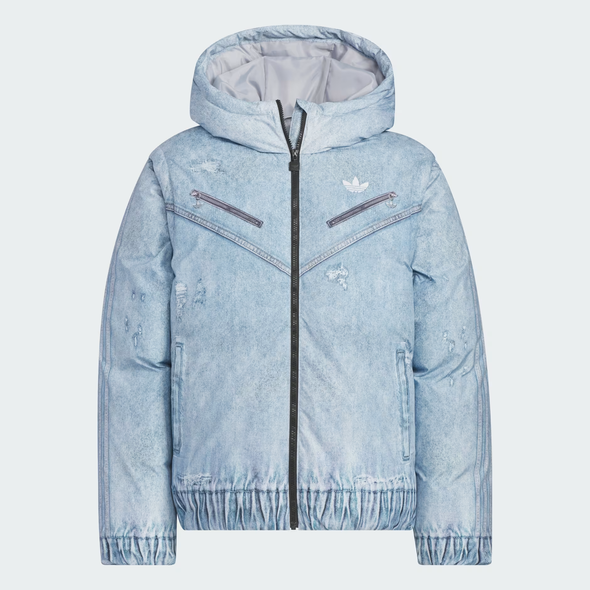
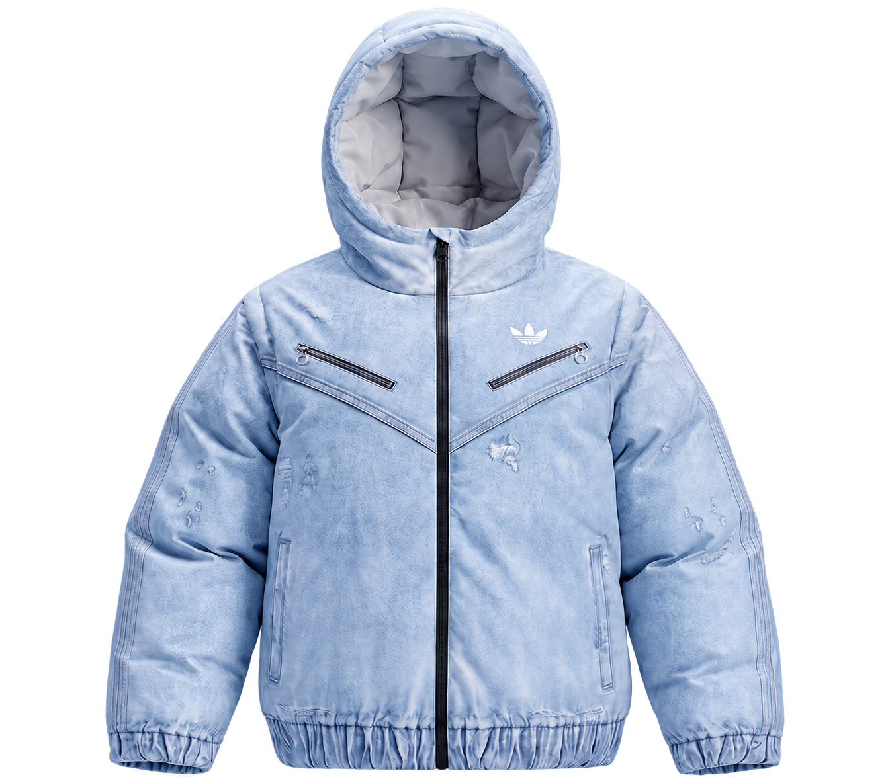
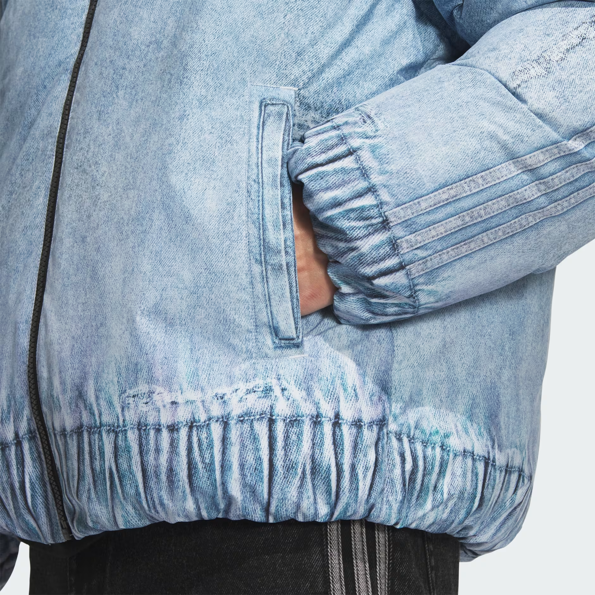
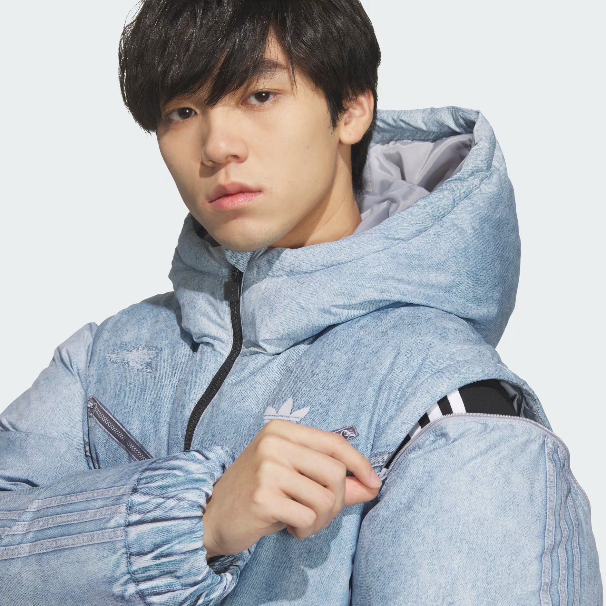
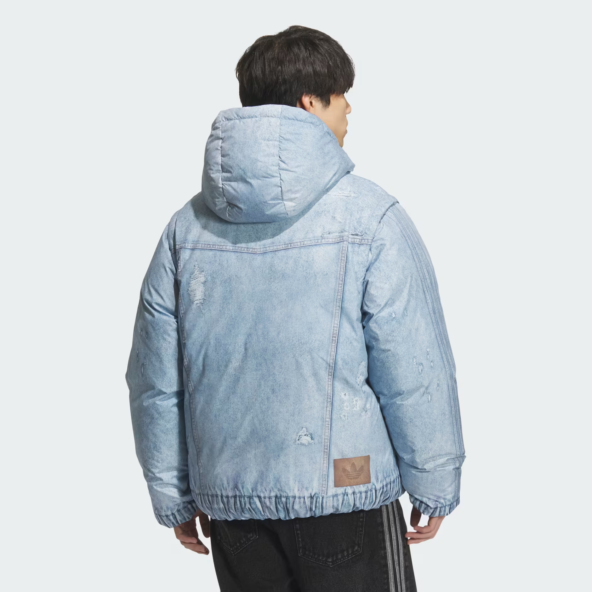
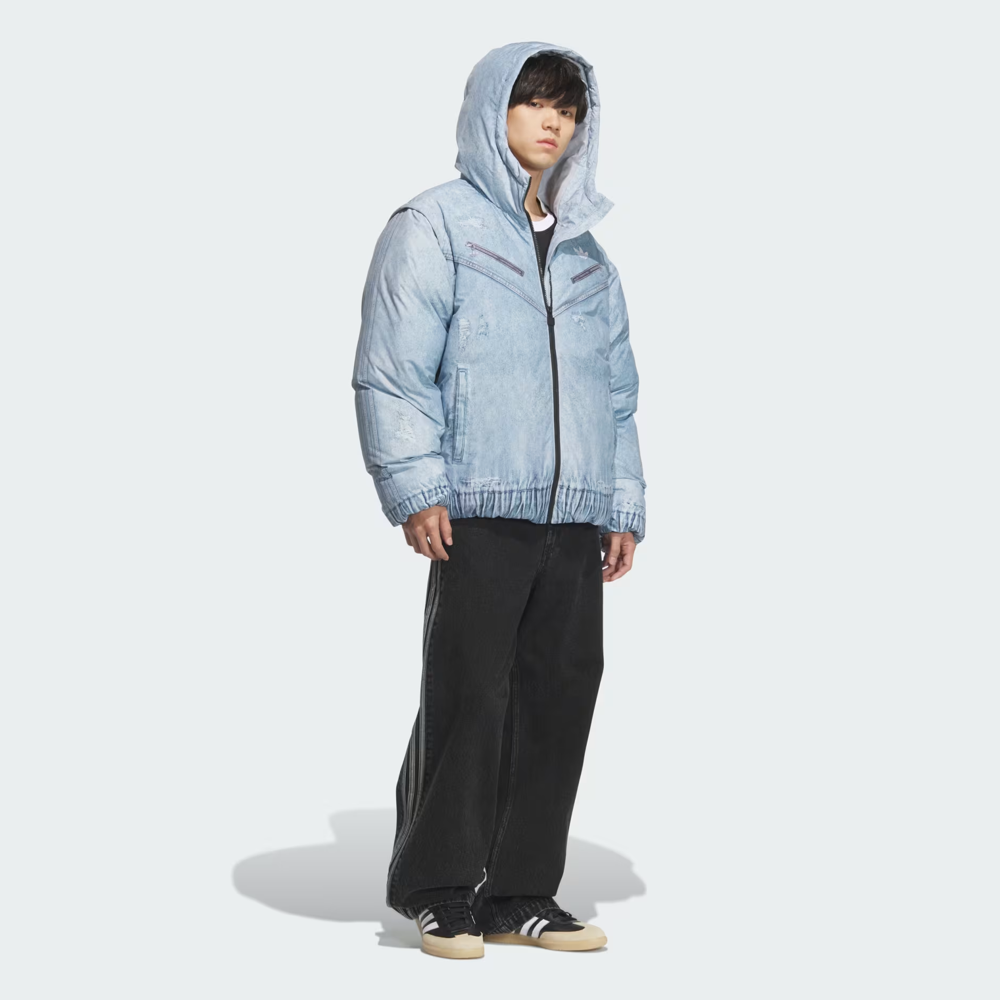

01
Room to be yourself.
A broad silhouette, generous sleeves and gathered cuffs create its distinctive volume.

ORIGINALS. A DIFFERENT OUTLOOK.
A softer side of winter.
A CLOSER PERSPECTIVE
Washed blue texture. Generous proportions.
A closer look at the details.

THE DETAILS MAKE THE DIFFERENCE.Three perspectives on
one distinctive jacket.

A broad silhouette, generous sleeves and gathered cuffs create its distinctive volume.

A closer look at the shoulder zipper, stitched edges and washed blue texture.

Washed texture, subtle distressed marks and a small rear patch reward a closer look.
A CHANGE OF PERSPECTIVE
The shape comes to life.
THE SILHOUETTE / IN PERSPECTIVE
THE JACKET
FK Denim Down JKT
A loose-fit down jacket with a washed denim-look finish, diagonal zip pockets and the Originals Trefoil.
Loose fit with a large padded hood, diagonal chest zip pockets and gathered cuffs and hem.
Shell and lining: 100% recycled polyester in a plain weave. Filling: 80% duck down and 20% duck feathers.
This is an independent design demo. Product information is based on the supplied adidas listing. Price and availability are not confirmed. No purchases are processed here.
A product study. Explore the details; imagine the possibilities.
THE SEASON. YOUR EXPRESSION.
Padded shapes. Different personalities.
Find your own winter perspective.
A contrast of tones. A generous padded shape.
Quilted volume with a clean, understated finish.
A hooded down jacket with zip-off sleeves that turn it into a vest.